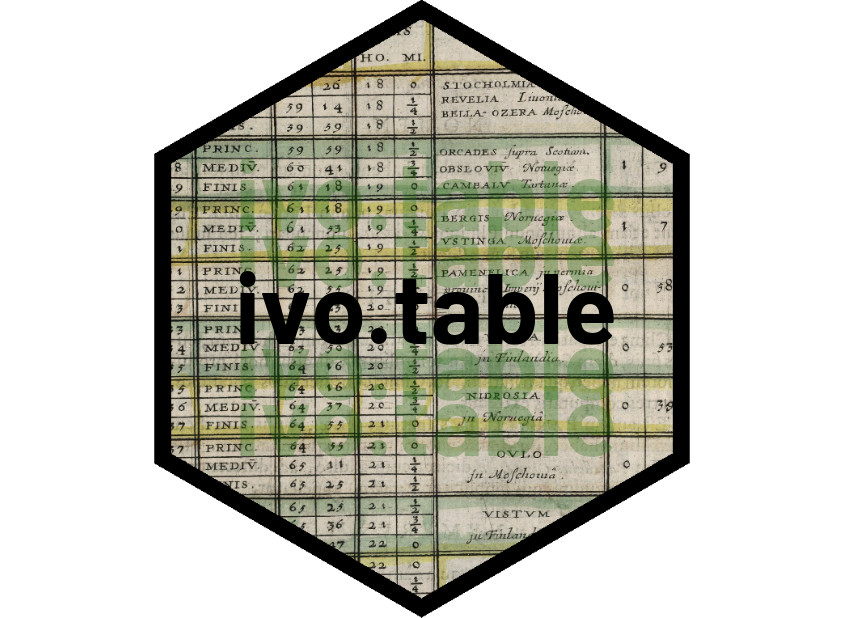

Changelog
Source:NEWS.md
ivo.table version 0.5
CRAN release: 2024-08-28
Improved table formatting and fixed a bug that could occur for datasets with missing data.
ivo.table version 0.4
CRAN release: 2024-02-06
Removed the option to export to Excel due to upstream changes in the flextable package. Bug fixes.